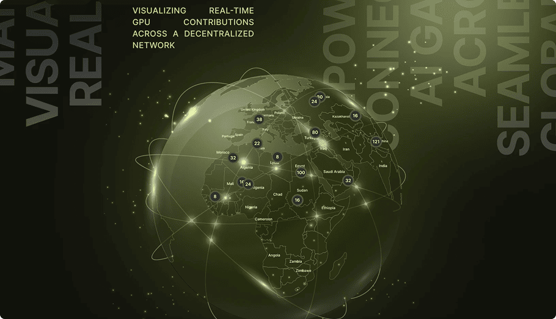
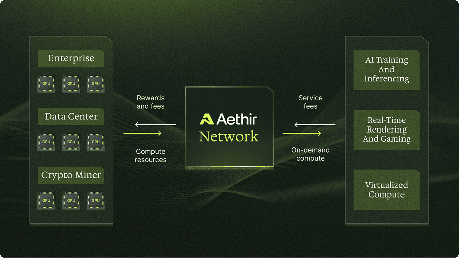

Time Saved!
Up to 6 months faster MVP delivery vs. in-house
Aethir is the only Enterprise-grade AI-focused GPU-as-a-service provider in the market. They needed a reliable development partner to rapidly build and ship their dashboard MVP without the overhead of assembling an in-house team.
Visit website →Released
Feb 2024
Client
Aethir
Feature Usage
Analytics, Dashboard, Autocomplete, Filters, Search API
Key Results
Ease of use, Fast implementation

Collaboration Type: MVP Development
Cyberk partnered with Aethir to build out their GPU-as-a-service dashboard from concept to production-ready MVP. Our team embedded directly with Aethir's product leadership to ensure alignment on vision, technical requirements, and delivery milestones.
Challenge
Aethir needed to launch a fully functional analytics dashboard for their enterprise GPU cloud platform — fast. Building an in-house engineering team would have taken months of recruiting, onboarding, and ramping up. They needed a partner who could hit the ground running, understand the complexity of GPU infrastructure, and deliver a polished product under tight deadlines.
Services Provided
Cyberk kicked off with a focused discovery phase, mapping out Aethir's core user flows, data architecture, and integration points. We identified the highest-impact features and designed a phased delivery plan that prioritized speed without sacrificing quality.
Development was executed in two-week agile sprints with continuous demos and feedback loops. Our engineers built the analytics dashboard, autocomplete search, advanced filters, and API integrations — all while maintaining clean, maintainable code that Aethir's team could extend post-launch.
The final delivery included comprehensive QA, performance optimization, and a smooth production deployment. Cyberk also provided hypercare support post-launch to address any edge cases and ensure platform stability.

Results & Achievements
Through our partnership, Aethir achieved significant milestones:
- OpenLedger integration with 99% cost savings on data infrastructure
- Support for thousands of AI models running on the platform
- Full GPU network dashboard operational in just 2 weeks